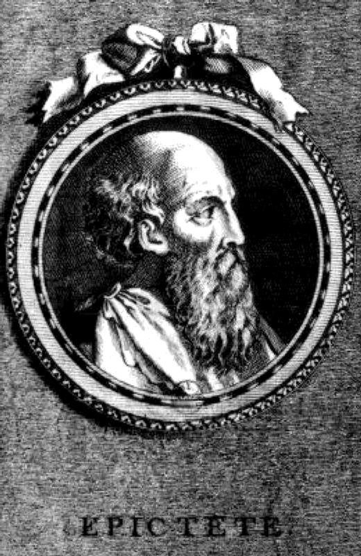
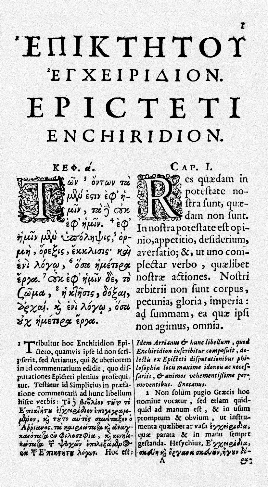

A propos d'Epictète
Épictète, en grec ancien Ἐπίκτητος / Epíktêtos, qui signifie « homme acheté, serviteur », (Hiérapolis, Phrygie, 50 • Nicopolis, Épire 125 ou 130) était un philosophe de l’école stoïcienne.
Sa vie est relativement peu connue et il ne laissa aucune œuvre écrite de sa main. Son disciple Arrien assura la transmission de son œuvre en publiant les notes prises lors des leçons de son maître, en huit livres, dont la moitié sont aujourd'hui perdus, ainsi qu'un condensé de doctrine morale, le Manuel, textes qui eurent une influence certaine sur Marc Aurèle.
Portrait fictif, gravure (XVIIIe siècle).
Manuel d'Epictète
Le Manuel d'Épictète (Ἐγχειρίδιον Επικτήτου, Enkheiridion Epiktetou en Grec ancien, « enkheiridion » désignant « ce que l'on garde sous la main »), parfois simplement nommé Le Manuel, est un ouvrage compilé par Arrien. Sans doute publié pour la première fois autour de l'an 125, il s'agit d'un court livre résumant la doctrine du philosophe stoïcien Épictète. Contrairement aux ouvrages de philosophie habituels, le Manuel ne contient aucun approfondissement théorique, mais s'attache à définir des exemples pratiques tirés du quotidien, afin d'illustrer la mise en application des principes de la sagesse stoïcienne dans la vie de chacun. 
Première page d'une édition bilingue grec-latin de 1683.
A été influencé par
Courants de pensées et personnages ayant eu une influence sur Epictète :
A influencé
Personnes ayant été influencées par la philosophie d'Epictète :
- Arrien
- Junius Rusticus
- Marc Aurèle
- Blaise Pascal
- Albert Ellis
- Jonathan Barnes